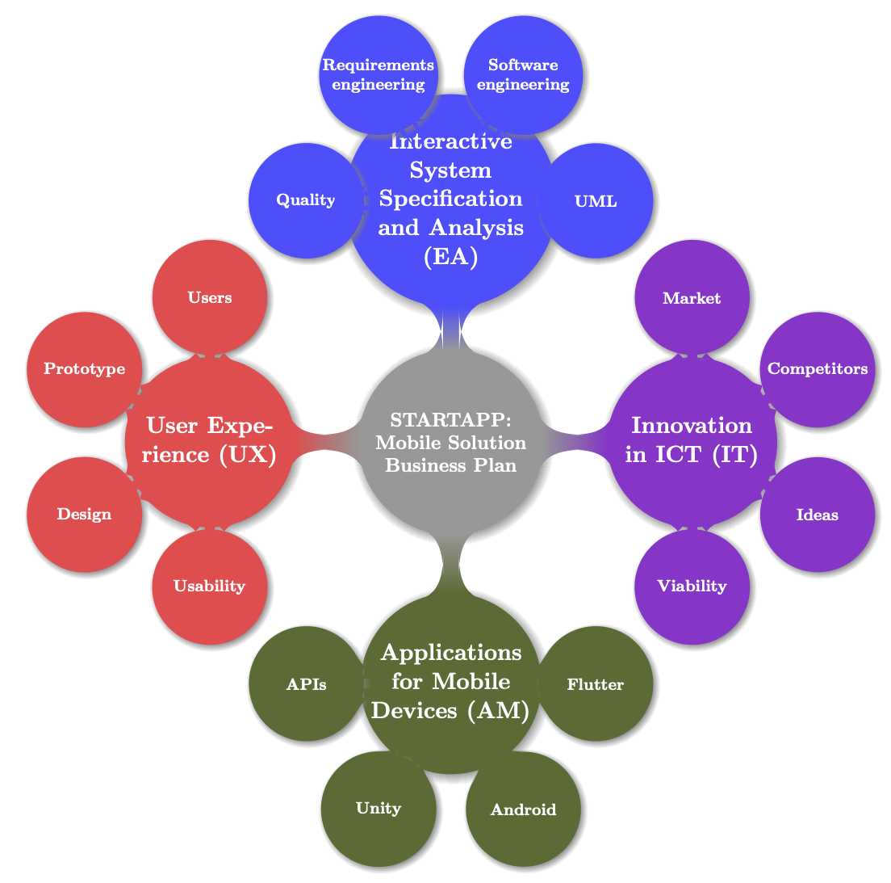

START-APP
An integrated real project for computer science students
Course Grau en Tècniques d'Interacció Digital i de Computació
Carried out University of Lleida | Campus Igualada-UdL

Introduction
In the 21st century, success requires more than basic knowledge and skills. Students must learn how to take initiative and responsibility, build their confidence, solve problems, work in teams, communicate ideas, and manage themselves more effectively.
Introduction
The project is focused on encouraging students to face a real scenario, which aims to consolidate an innovative startup based on an application for mobile devices and develop skills related to organization, communication, and human relations to coordinate the team and learn to sell the ideas.
Introduction
StartAPP project is focused on essential aspects of application development (requirements analysis, user-centred development, agile methodologies, or design patterns) and a course where students learn to launch innovative projects to the market.
Methodology
- Learn to learn.
- Project-Based Course: Learning by doing.
- Competitive Team-Based Learning: Groups (4 students)
- Win the final contest based on a real financial round.
- Coworking and Collaborative Learning
Methodology
An active methodology is used where the student is the protagonist of their learning (learning to learn) and is responsible for deciding what final product they want to develop and what knowledge they need to achieve the objectives of each delivery.Methodology
- A cooperative methodology is proposed, working in teams of 3 to 4 members to promote interdisciplinarity.
- Students will incrementally develop an innovative app.
- The different work rhythms of each group are respected.
Methodology
The deliveries are functional, with constant feedback and suggestions from the teaching staff and the rest of the teams, allowing pivoting actions and corrections.
How it works?
All activities and deliveries are carried out under the umbrella of a common project to develop innovative applications. This joint project is developed in:
Umbrella: Mindmap
Purpose:
Innovation = Art + Invention + Value
by using Lean and Agile Development
- What is possible with the current technology?
- What my users want?
- Which are similar solution in the market
- How can I “love the low end”?.
- How can I find more resources for innovation?
- How do I spot opportunities?
Context
The context for the fall 2020/21 is Impulsem l’Anoia. The theme is open to fit different ideas, such as tourism, trade, history, etc. We look forward to innovative ideas that will help continue to drive the Anoia region.Goals
- Be ambitious, creative, confident and persistent.
- Work hard
- Take risks
- The philosophy must not be: I need to do to pass the course, must be this project is my dream, who knows if maybe is the seed to a future successful company.